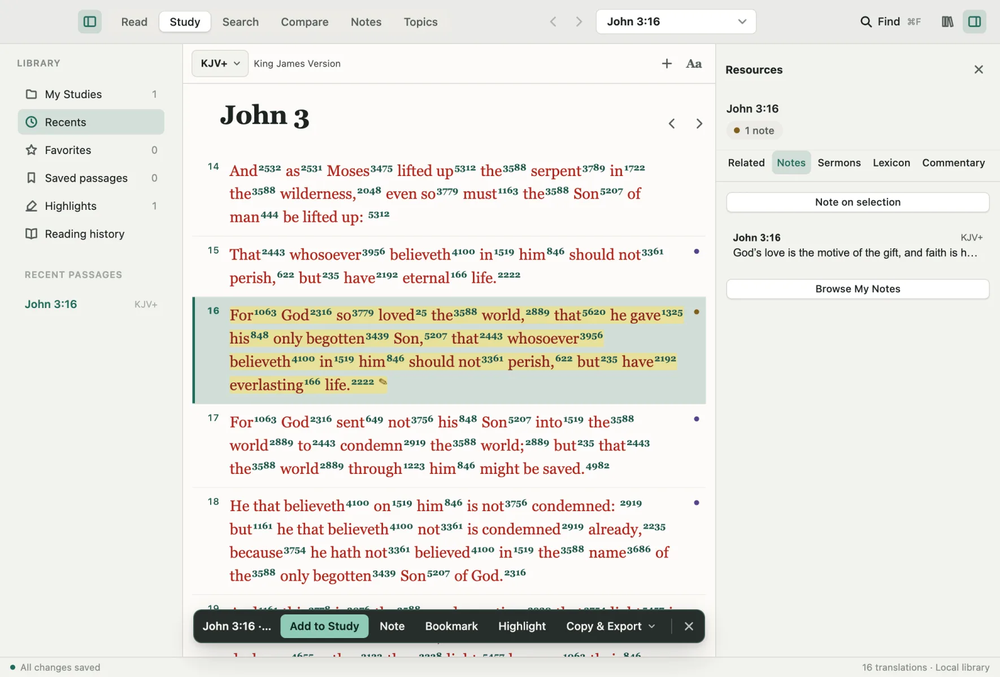
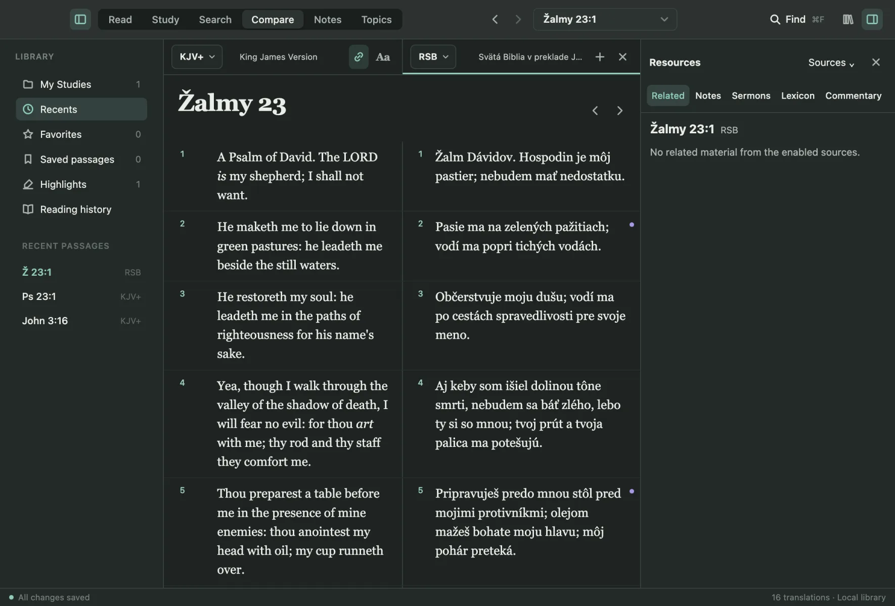
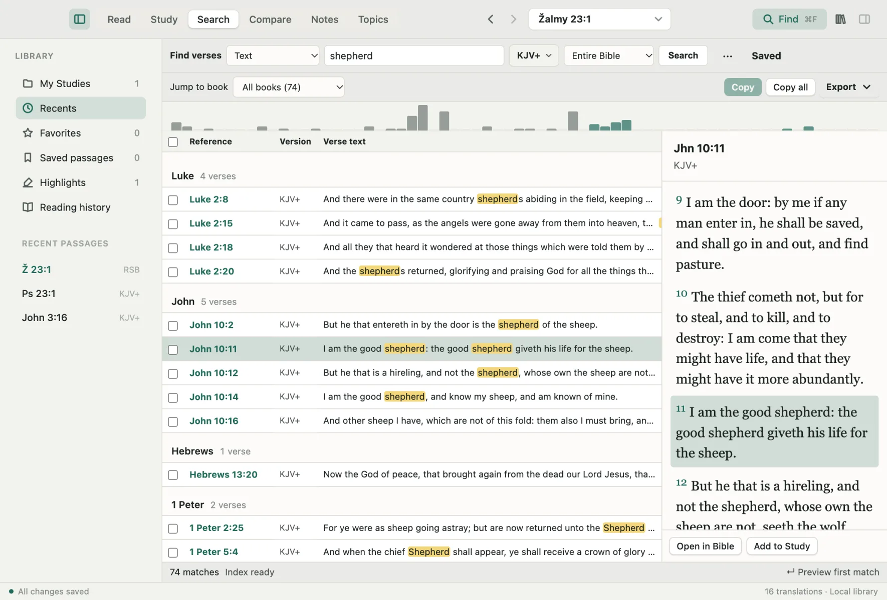
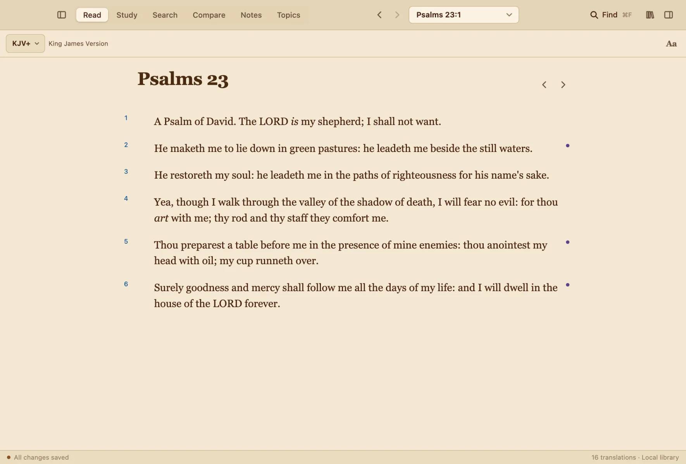
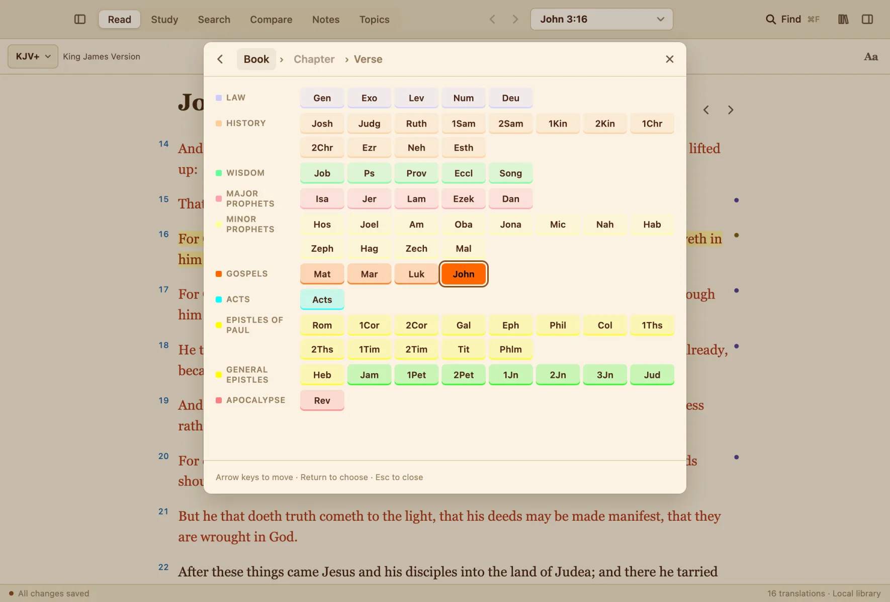

MyBible.rs
MyBible.rs je pokojné miesto na čítanie a štúdium Písma na Macu. Otvorte viac prekladov vedľa seba, prehľadajte celú Bibliu za okamih, píšte si poznámky a zbierajte miesta do vlastných štúdií. Funguje s modulmi formátu MyBible a anglická King James Version je priložená. Všetko zostáva vo vašom počítači — bez účtu a bez reklamy.
Chcete vedieť, keď vyjde ďalšia verzia tejto aplikácie?
Dostávať novinky o aplikáciách e-mailommacOS
Aktuálna verzia: 0.1.0
macOS 10.15 alebo novší, Apple Silicon aj Intel. Otvorte stiahnutý súbor a presuňte MyBible.rs do priečinka Aplikácie. Aplikácia je podpísaná a overená spoločnosťou Apple.
Čo aplikácia dokáže
Čítanie podľa vás
Režimy Čítanie, Štúdium a Porovnanie. Šesť farebných motívov vrátane sépie a nočného, voľba písma, veľkosti a riadkovania, verše v odsekoch alebo každý na novom riadku a Ježišove slová červenou.
Porovnanie prekladov
Až tri preklady vedľa seba, synchronizované pri listovaní. Verše sa zarovnajú aj vtedy, keď preklady číslujú inak.
Rýchle vyhľadávanie
Hľadajte v celej Biblii, v zákone alebo v jednej knihe. Presná fráza, bez ohľadu na diakritiku, výsledky zoskupené podľa kníh s grafom výskytu, náhľad kontextu a kopírovanie alebo export.
Nástroje na štúdium
Strongove čísla so slovníkmi, poznámky pod čiarou, krížové odkazy, komentáre a slovníky z modulov MyBible.
Poznámky, zvýraznenia a štúdie
Poznámka ku každému veršu, zvýraznenie farbou, záložky a vlastné štúdie so skupinami a štítkami. Štúdie vyexportujete do Markdownu.
Knižnica modulov
Sťahujte Biblie, slovníky a komentáre z verejných zdrojov modulov MyBible alebo použite svoj existujúci priečinok MyBible.
Kázne a knihy Misie
Panel Zdroje ukazuje kázne a knihy Misie, ktoré sa týkajú čítaného miesta. Po jednej synchronizácii sú dostupné aj bez internetu.
Súkromne a offline
Bez účtu, reklamy a sledovania. Poznámky a nastavenia sú uložené len v Macu, so zálohou a obnovením. Internet je potrebný iba na sťahovanie modulov a synchronizáciu.
Snímky obrazovky









